This page collects the numerical results of the accompanying manuscript (in preparation). The numbers are read from results/*.json and the figures from figures/ in the repository. Both are produced by the Python pipeline of the repository with fixed seeds (make results figures, about 13 minutes). htheoryR implements the same estimators; Recovering the depth of a cascade runs them in R on simulated data.
The model
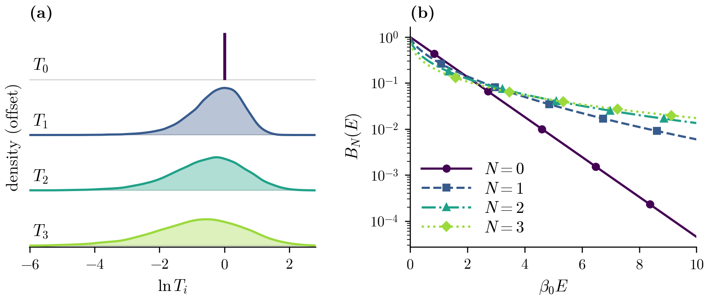
Figure 1. The cascade and its statistical factor in the class s = 1/2. (a) Densities of log Ti for i = 0, …, 3, from simulated chains with ai = 2 and T0 = 1, offset vertically. (b) Statistical factor BN(E) for N = 0, …, 3 at a = 1, on a logarithmic vertical scale. Deeper cascades decay faster near E = 0 and more slowly in the tail.
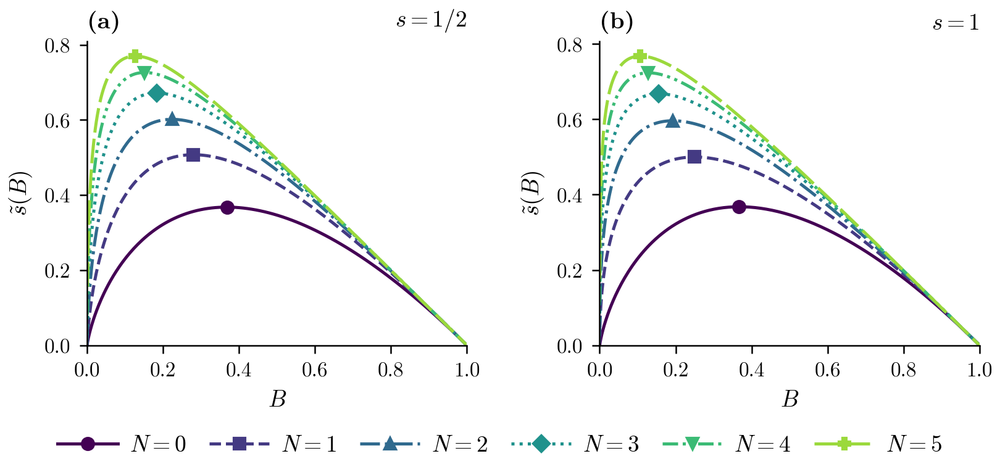
Figure 2. Entropy generator plotted against the statistical factor B for N = 0, …, 5 and a = 1: (a) class s = 1/2; (b) class s = 1. The marker on each curve indicates its maximum. All curves are concave, and at fixed B the generator increases with N.
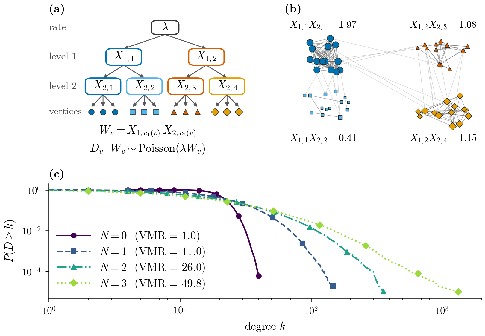
Figure 4. Hierarchical mixed-Poisson model. (a) Generative hierarchy for N = 2: the propensity Wv of a vertex is the product of the factors of its communities, and its degree is Poisson with mean λWv. (b) One realized graph with N = 2. (c) Complementary cumulative degree distributions of 105 simulated vertices for N = 0, …, 3 (s = 1/2, a = 2, λ = 20). Depth increases the dispersion of the degrees, which is the information used by the estimator.
Simulation: size and power of the depth test
The bootstrap test of was applied to samples from cascades of depth (class , ), with 100 samples per cell and 200 bootstrap replicates per test. The row is the size of the test (nominal level 0.05); the other rows are its power.
| True depth | n = 100 | n = 300 | n = 1000 | n = 5000 |
|---|---|---|---|---|
| 1 | 0.02 (0.014) | 0.04 (0.020) | 0.04 (0.020) | 0.09 (0.029) |
| 2 | 0.18 (0.038) | 0.56 (0.050) | 0.97 (0.017) | 1.00 (0.000) |
| 3 | 0.36 (0.048) | 0.82 (0.038) | 1.00 (0.000) | 1.00 (0.000) |
| 5 | 0.65 (0.048) | 0.98 (0.014) | 1.00 (0.000) | 1.00 (0.000) |
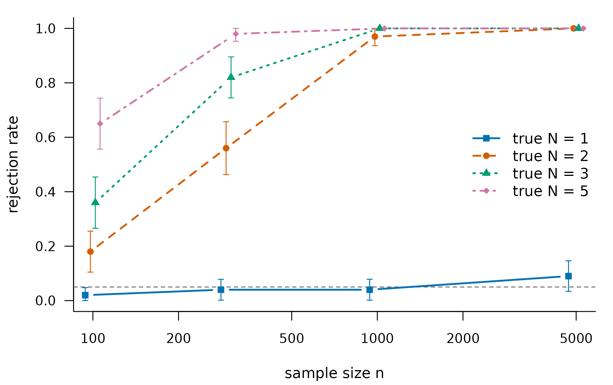
Rejection rate of the test of H0: N = 1 against the sample size, by true depth, read from results/compute_article_numbers.json. Bars are +/- 1.96 Monte Carlo standard errors; the dashed line is the nominal level 0.05.
The closed-form log-cumulants were checked against a large sample of an unequal-shape cascade (, ):
| cumulant | simulated | closed_form |
|---|---|---|
| kappa_2 | 4.1629 | 4.1638 |
| kappa_3 | -7.4353 | -7.4179 |
| kappa_4 | 27.6398 | 27.4072 |
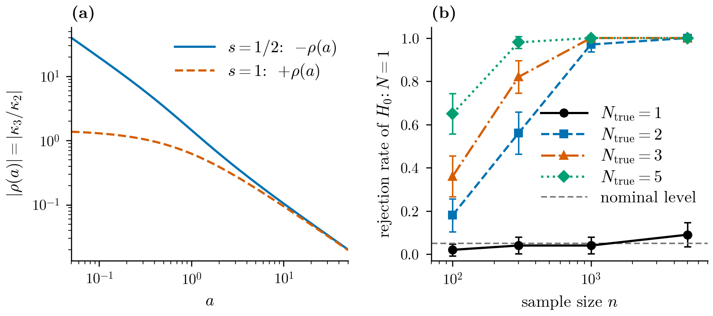
Figure 3. (a) Absolute log-cumulant ratio κ3/κ2 against the homogeneous shape a; the ratio is negative for s = 1/2 and positive for s = 1, and for s = 1 it is bounded by 2ζ(3)/ζ(2) ≈ 1.46. (b) The rejection rates of the table above, as in the manuscript.
Data sets
| Network | Vertices | Edges | Density | Mean degree | Transitivity | Assortativity |
|---|---|---|---|---|---|---|
| email-Eu-core | 986 | 16064 | 0.0331 | 32.6 | 0.267 | -0.0257 |
| OpenFlights | 3330 | 19079 | 0.00344 | 11.5 | 0.249 | -0.0103 |
| C. elegans | 279 | 2287 | 0.059 | 16.4 | 0.213 | -0.0927 |
- email-Eu-core (SNAP): e-mail exchanges in a European research institution. The degree analysis keeps all 1005 vertices of the directed graph, including those of degree zero.
- OpenFlights (OpenFlights): airports and the routes between them.
- C. elegans (WormAtlas): the hermaphrodite connectome; chemical synapses and gap junctions, each gap junction counted once.
- Turbulence (Mendeley Data): hot-wire velocity in the wake of a 50 mm cylinder, Re = 5.17 × 104, sampled at 1000 Hz, 217 values. The analysis uses squared velocity increments at lags of 2 to 100 ms.
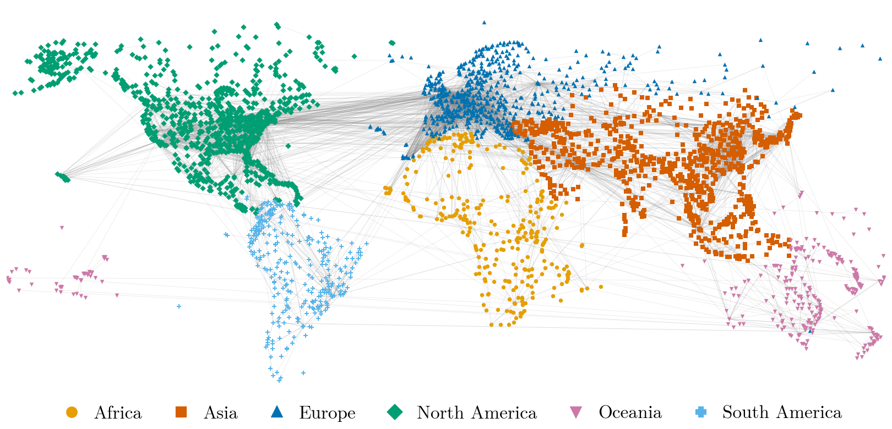
Figure 5a. OpenFlights: airports at their geographic position, colored by continent, with a random sample of 6000 routes.
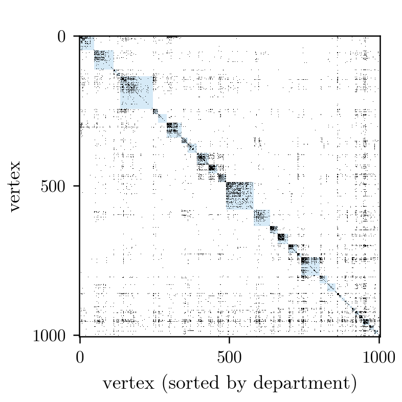
Figure 5b. email-Eu-core adjacency matrix, vertices sorted by department; pairs within the same department (42 blocks) are shaded.
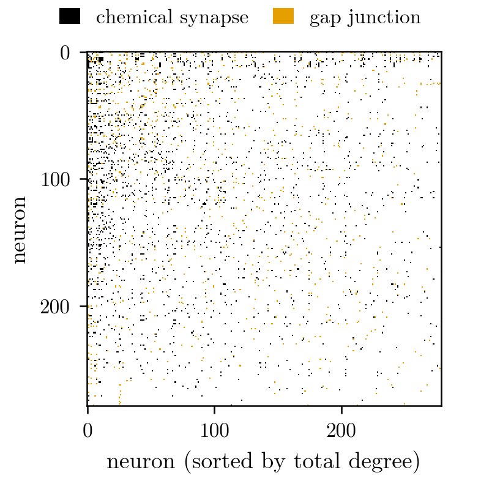
Figure 5c. C. elegans adjacency matrix, neurons sorted by total degree; chemical synapses in black and gap junctions in orange. The estimator uses only the degree sequences of the three networks.
Estimates for the networks
For each degree series, only one class is admissible (the sign of the log-cumulant ratio of the mixing law excludes the other). The table gives the point estimates of and with 95% percentile intervals from 1000 bootstrap resamples of the vertices, the rounded depth , and the -value of the bootstrap test of . Because is chosen from the same data, that -value is a goodness-of-fit diagnostic, not a confirmation of the depth.
| System | Series | n | VMR | s | â | 95% CI (a) | N̂ | 95% CI (N) | N rd | p |
|---|---|---|---|---|---|---|---|---|---|---|
| email-Eu-core | out | 1005 | 43.6 | 1/2 | 0.768 | 0.396–1.27 | 1.18 | 0.731–1.75 | 1 | 0.391 |
| email-Eu-core | in | 1005 | 30.7 | 1/2 | 0.802 | 0.555–1.13 | 0.956 | 0.727–1.24 | 1 | 0.825 |
| email-Eu-core | total | 1005 | 71 | 1/2 | 0.825 | 0.495–1.29 | 1.09 | 0.743–1.58 | 1 | 0.645 |
| OpenFlights | out | 3315 | 144 | 1/2 | 0.216 | 0.126–0.333 | 1.21 | 0.93–1.53 | 1 | 0.194 |
| OpenFlights | in | 3321 | 144 | 1/2 | 0.215 | 0.127–0.334 | 1.2 | 0.938–1.54 | 1 | 0.193 |
| OpenFlights | total | 3330 | 288 | 1/2 | 0.212 | 0.125–0.317 | 1.2 | 0.92–1.5 | 1 | 0.193 |
| C. elegans | out | 253 | 16.7 | 1/2 | 8.06 | 1.03–61 | 4.13 | 0.57–28.4 | 4 | 0.989 |
| C. elegans | in | 268 | 42.5 | 1/2 | 1.09 | 0.409–1.81 | 1.55 | 0.667–2.23 | 2 | 0.770 |
| C. elegans | total | 279 | 51.6 | 1 | 7.55 | 3.92–134 | 4.77 | 1.85–98.8 | 5 | 0.995 |
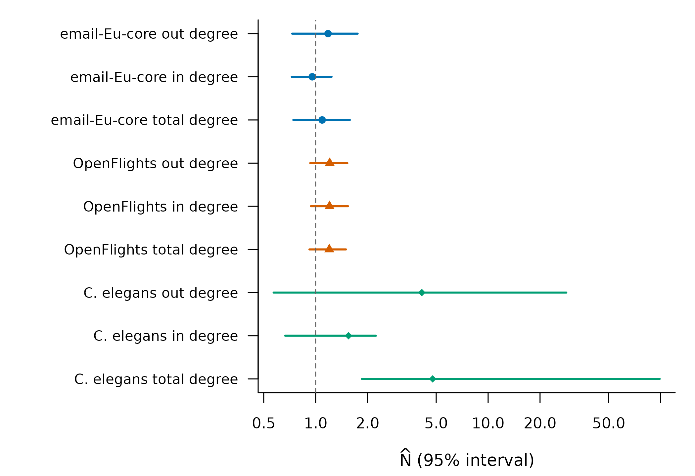
Depth estimates with 95% bootstrap intervals for the nine degree series (logarithmic axis), read from results/analyze_*.json. The dashed line marks N = 1.
- email-Eu-core and OpenFlights. Every series selects with , and every interval for contains one: a single gamma mixing level, that is, negative-binomial degrees, describes both networks. A single level is a description of the degree law, not evidence of a one-level hierarchy.
- C. elegans. The three series disagree (different rounded depths, and the total degree selects the other class), and the intervals are wide. With about 250 to 280 neurons, the data do not determine the depth.
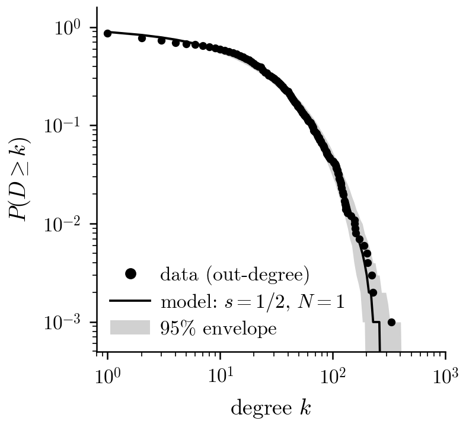
Figure 6a. email-Eu-core, out-degree: empirical complementary cumulative degree distribution (markers) and the fitted mixed-Poisson model at the tested null hypothesis (line: pointwise median; band: 95% envelope over 500 simulated degree sequences of the same size).
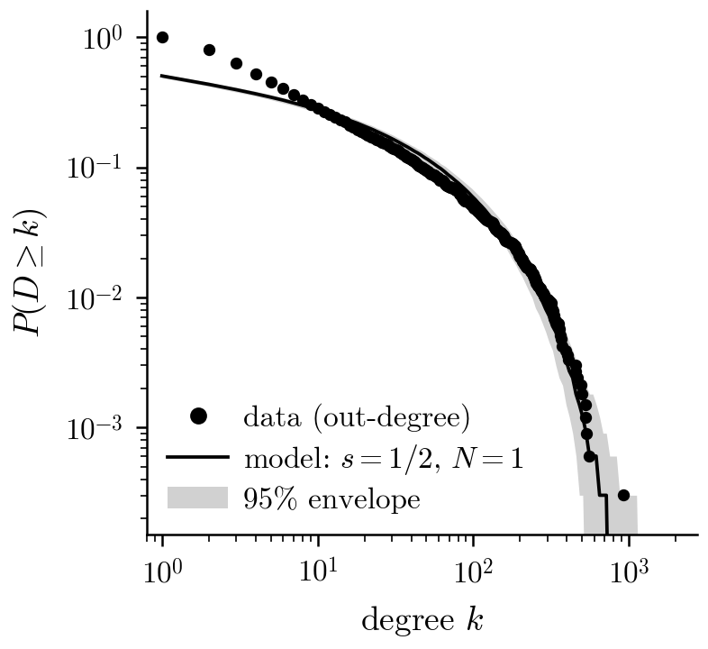
Figure 6b. OpenFlights, out-degree, as in Figure 6a.
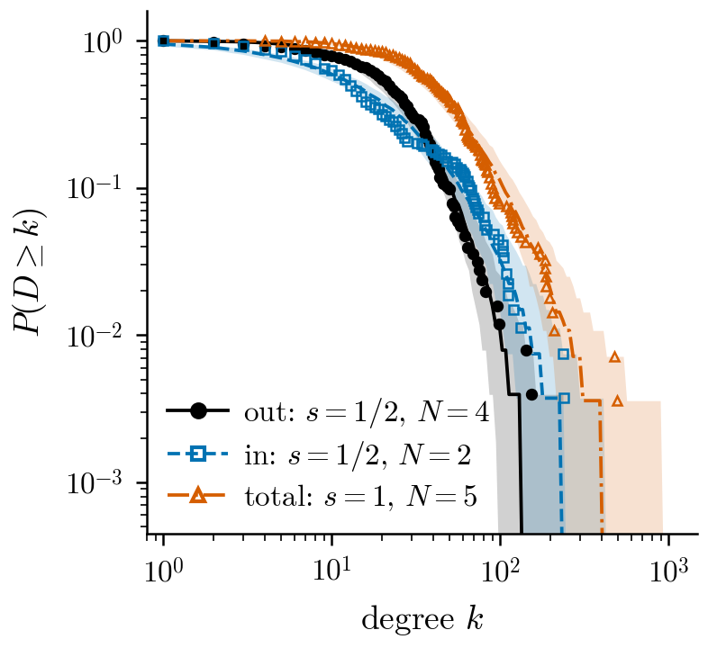
Figure 6c. C. elegans, the three degree series, as in Figure 6a.
Estimates for the turbulence record
For squared Gaussian velocity increments, the model with , , is exact, so it is the benchmark here. Intervals use a moving-block bootstrap; the thinned series keep every -th value to reduce serial dependence.
| Lag (ms) | Variant | n | s | â | 95% CI (a) | N̂ | 95% CI (N) | N rd | p |
|---|---|---|---|---|---|---|---|---|---|
| 2 | full | 131035 | 1/2 | 0.595 | 0.583–0.607 | 1.28 | 1.24–1.31 | 1 | <0.001 |
| 2 | thinned | 65519 | 1/2 | 0.591 | 0.575–0.609 | 1.26 | 1.22–1.31 | 1 | <0.001 |
| 5 | full | 131043 | 1/2 | 0.503 | 0.494–0.513 | 0.775 | 0.757–0.794 | 1 | <0.001 |
| 5 | thinned | 26209 | 1/2 | 0.513 | 0.489–0.536 | 0.788 | 0.741–0.833 | 1 | <0.001 |
| 10 | full | 131027 | 1/2 | 0.536 | 0.527–0.547 | 1.06 | 1.04–1.09 | 1 | 0.001 |
| 10 | thinned | 13104 | 1/2 | 0.537 | 0.506–0.571 | 1.06 | 0.986–1.15 | 1 | 0.254 |
| 20 | full | 131029 | 1/2 | 0.491 | 0.482–0.5 | 0.751 | 0.733–0.769 | 1 | <0.001 |
| 20 | thinned | 6553 | 1/2 | 0.474 | 0.436–0.518 | 0.708 | 0.631–0.797 | 1 | 0.002 |
| 50 | full | 130989 | 1/2 | 0.522 | 0.513–0.532 | 1.02 | 0.989–1.05 | 1 | 0.354 |
| 50 | thinned | 2620 | 1/2 | 0.499 | 0.435–0.582 | 0.937 | 0.78–1.15 | 1 | 0.578 |
| 100 | full | 130945 | 1/2 | 0.519 | 0.51–0.529 | 1.02 | 0.99–1.05 | 1 | 0.385 |
| 100 | thinned | 1309 | 1/2 | 0.604 | 0.538–0.689 | 1.22 | 1.04–1.43 | 1 | 0.202 |
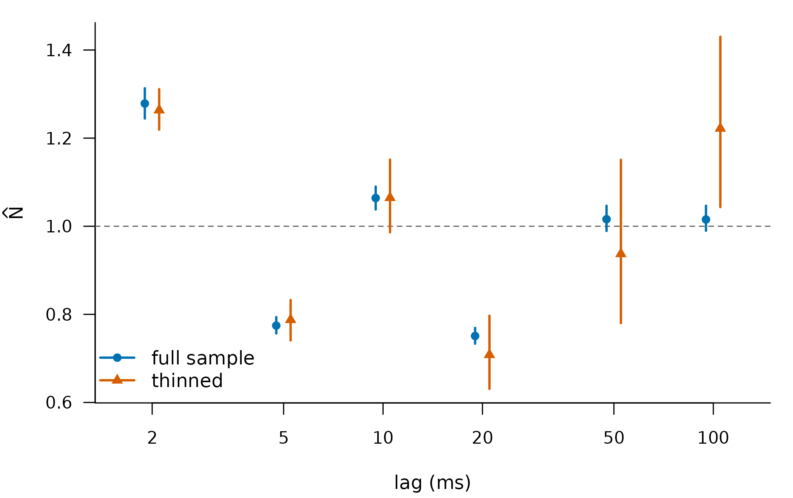
Depth estimates with 95% block-bootstrap intervals for the squared velocity increments, by lag, read from results/analyze_turbulence.json. The dashed line marks the Gaussian benchmark N = 1.
At 2, 5 and 20 ms the test rejects in the full and the thinned series, and both intervals for exclude one: these increments depart from the Gaussian benchmark. At 10 ms the full series rejects () but the thinned series does not (), and the thinned interval contains one. At 50 and 100 ms neither series rejects, and the full-sample intervals contain one; at 100 ms the thinned interval (1.04–1.43, from 1309 values) does not. The estimate is not monotone in the lag, and compatibility with is not the same as Gaussianity.
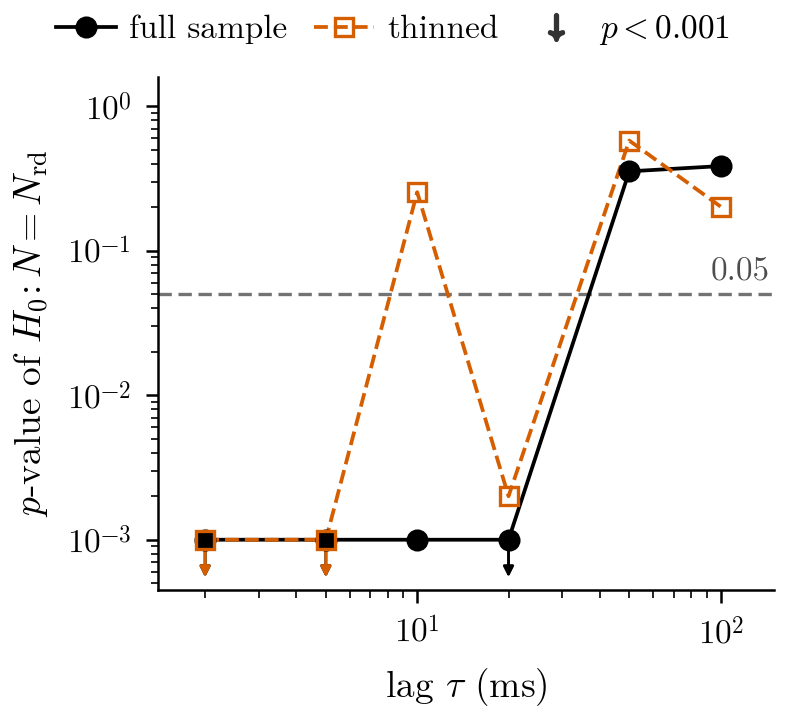
Figure 6d. p-value of the bootstrap test of H0: N = 1 for the squared velocity increments against the lag, for the full sample and the thinned series; the dashed line marks 0.05.
What the results show and what they do not
- With equal shapes across levels, the class, the shape and the depth of a gamma or inverse-gamma cascade are identifiable from the law of the innermost temperature, and the same holds for the degrees of the hierarchical mixed-Poisson model.
- The depth test holds its level (rejection rates of 0.02 to 0.09 under the null) and reaches a power of 0.97 against a two-level cascade at .
- The analysis assumes equal shapes. A cascade with unequal shapes returns an effective homogeneous depth.
- No data set here has a known multi-level structure against which an estimated depth could be validated. The department labels of email-Eu-core are a flat partition, and the geographic levels of OpenFlights were not used as a reference.